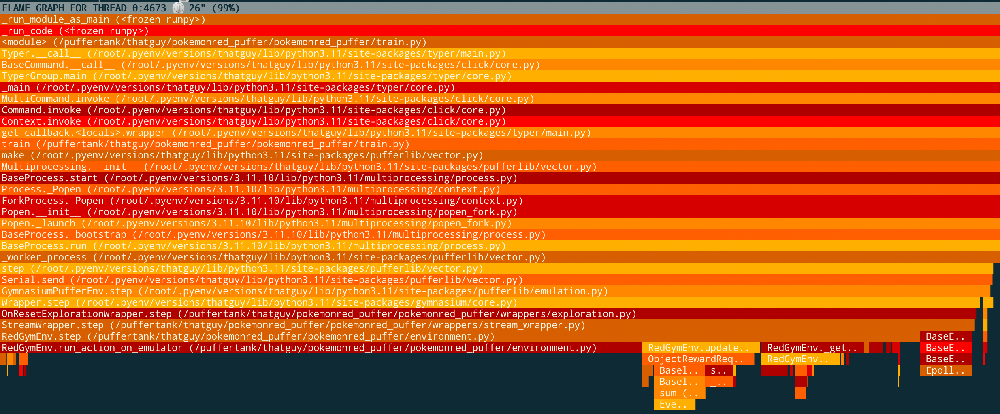

Actually Building the RL System #
So I have a policy, observations, an environment and a reward. Now it’s time to discuss the meat of the system and how I wrote it. Along the way, I’ll provide relevant snippets of code and tricks I did to make my system run as fast as possible.
Before I begin though, I am obligated to give thanks to Joseph Suarez, the creator of PufferAI and PufferLib. Joseph graciously donated 4 machines to this effort. Each machine contained a NVIDIA 4090 GPU, Intel Core i9-14900K, 125 GB of RAM and 2TB of disk space. Before his contribution, I was paying $200/month using vast.ai for training with worse hardware.
Good hardware although not necessary, massively sped up training.
But what was more important than good hardware? Good software! I want to discuss some of the challenges of the Pokémon environment and mitigations I had in place for those challenges. In the end, I 10x’d the steps per second (sps) of training to a peak of 10000 sps with a lot of extra engineering effort. Potentially more effort than I put into everything I mentioned previously.
Pokémon is CPU Bound #
The Emulator #
Before I started working on the RL side of this project, it was commonly voiced in the Pokémon RL Discord that PyBoy slow. PyBoy happens to provide a very convenient interface for RL and is relatively well performant for Python. However, using an emulator comes with its downsides. Namely, PyBoy is emulating every instruction from the ROM. That means no compiler optimizations, no link time optimizations etc. I could have attempted to rewrite Pokémon in a modern language, but that would have been a Herculean effort on its own. Instead, PyBoy got faster.
A slow PyBoy was the case. But I’ve been in frequent communication with the creator of PyBoy for a while and we (mostly him) have put a lot of effort into improving PyBoy since late 2023. PyBoy has released a number of updates that have improved runtime speed and developer ergonomics dramatically including:
- Better usage of compiler optimization flags.
- Better usage of Cython’s gil release options.
- JIT compiling the ROM.
- Data layout optimization.
- The addition of hooks.
Most of these changes are in PyBoy’s core. Hooks are a special addition that let me inject Python code at specified instructions. Although the context switch back to Python slows down execution, the less frequent RAM reads hooks allow have led to an overall speedup in Pokémon. However, even now, the environment still uses the majority of training time!

Collecting Screen Data #
With the working emulator, did I need to collect data every frame? Short answer, no. In fact, it is suboptimal to do so. Pokémon only uses action information sparingly. This is well documented in Peter Whidden’s video. In order to use PyBoy effectively:
- I render the game headless. No UI means less CPU time spent rendering the game.
- For every action, I tick PyBoy 24 times and record the game screen on the last step.
- I don’t collect information from memory every step.
def run_action_on_emulator(self, action):
self.action_hist[action] += 1
# press button then release after some steps
# TODO: Add video saving logic
if not self.disable_ai_actions:
self.pyboy.send_input(VALID_ACTIONS[action])
self.pyboy.send_input(VALID_RELEASE_ACTIONS[action], delay=8)
self.pyboy.tick(self.action_freq - 1, render=False)
# TODO: Split this function up. update_seen_coords should not be here!
self.update_seen_coords()
while self.read_m("wJoyIgnore"):
# DO NOT DELETE. Some animations require dialog navigation
self.pyboy.button("a", 8)
self.pyboy.tick(self.action_freq, render=False)
# One last tick just in case
self.pyboy.tick(1, render=True)
If we look at the core functionality for running an action on the emulator, there is one small addition. Ticking while the agent does not have control. Waiting for control to return to the player removes certain levels of non-determinism. Most annoyingly, the extra animation when moving a boulder with strength.
When to Care About the GPU #
Generating data on the CPU has generally been the bottleneck, but training and inference do occur and during the training loop of my RL system, I am not running the emulator. I’m running the policy on the GPU with PyTorch. There are still gains to be had from speeding up the GPU side of training, even if it didn’t give me 2x returns.
There are many avenues for speeding up training:
- Decrease the model size.
- Decrease the data size.
- Improve the GPU utilization.
- Improve sample efficiency.
There are some common techniques to improve the speedup. Some I contributed back to PufferLib (since early 2024 I have optimized pieces of PufferLib for a 2x speed up). I achived a 30% GPU speed improvement on inference by using torch.compile improved the GPU utilization with torch.compile. Torch compilation traces the execution graph of a PyTorch module and will create an optimized GPU execution graph.
The other major speed optimization in the training loop came from making sure I pinned memory for any tensors I used on GPU. Pinning prevents an extra memory copy when moving data from the CPU host to the GPU device.
Observation Size Matters #
After all that, the biggest bottleneck happened to be the data transfer of the observation. Not just from the CPU to GPU, but also from each agent back to the buffer holding all agent experiences for the current policy.
Remember the model is 40MB. However, model input for a ≈20k row batch is ≈450MB.
I looked into ways to decrease the memory size of the batch I sent to the GPU! Some techniques I used were really neat and I want to brag about them beyond choosing smaller data types, such as using a uint8 over a uint64 (1/8 smaller)
Compressing Data #
The GameBoy playable area is 144x160 pixels. PyBoy always returns 4 channels, RGBA. However, GameBoy games are grayscale so I only need 1 channel.
–> 1/4 reduction in screen data size or 92kB –> ≈23kB
Additionally, as Peter Whidden showed, the agent doesn’t need the full screen. Half resolution or downscaling the image to 72x80 pixels is fine.
–> 1/4 reduction in screen data or 23kB –> ≈6kB
I can go one step further. GameBoy’s color system is 2 bit. Every pixel takes 2 bits representing one of 4 values. Even though PyBoy does not return the dense layout of the game screen, I could recompress the data such that every 8 bits, that is 1 byte, represents 4 pixels? Then, I could decompress the data on the GPU which should be fast since GPUs are designed for massively parallel operations.
–> Another 1/4 reduction in data size or 6kB –> ≈2kB
And there I had a potential near 64x speed up in host<->device communication. Now why does this work?
To unpack on the GPU, I store two buffers, a bit mask and a number of shifts. I shift the bytes then apply the bit mask and voila hyper parallel decoding for both the visited mask and the game screen.
class Env(gym.Env):
def collect_screen_data(self):
# (144, 160, 3)
game_pixels_render = np.expand_dims(self.screen.ndarray[:, :, 1], axis=-1)
...
if self.reduce_res:
game_pixels_render = game_pixels_render[::2, ::2, :]
# game_pixels_render = skimage.measure.block_reduce(game_pixels_render, (2, 2, 1), np.min)
game_pixels_render = (
(
np.digitize(
game_pixels_render.reshape((-1, 4)), PIXEL_VALUES, right=True
).astype(np.uint8)
<< np.array([6, 4, 2, 0], dtype=np.uint8)
)
.sum(axis=1, dtype=np.uint8)
.reshape((-1, game_pixels_render.shape[1] // 4, 1))
)
...
class Policy(nn.Module):
def __init__(self):
...
self.register_buffer(
"screen_buckets", torch.tensor(PIXEL_VALUES, dtype=torch.uint8), persistent=False
)
self.register_buffer(
"unpack_mask",
torch.tensor([0xC0, 0x30, 0x0C, 0x03], dtype=torch.uint8),
persistent=False,
)
self.register_buffer(
"unpack_shift", torch.tensor([6, 4, 2, 0], dtype=torch.uint8), persistent=False
)
def unpack_screen_data(self, screen: torch.Tensor):
screen = torch.index_select(
self.screen_buckets,
0,
((screen.reshape((-1, 1)) & self.unpack_mask) >> self.unpack_shift).flatten().int(),
).reshape(restored_shape)
visited_mask = torch.index_select(
self.linear_buckets,
0,
((visited_mask.reshape((-1, 1)) & self.unpack_mask) >> self.unpack_shift)
.flatten()
.int(),
).reshape(restored_shape)
This data technique also works for the events vector. Instead of representing every event flag as 1 byte, I sent the entire events vector to the GPU. Therefore 1 byte held 8 flags. On the GPU, and performed a similar shift and mask! Fast decoding of over 2000 event flags.
A Good Vectorized Env is Worth its Weight in Gold #
In between the emulator and the model, I had the code managing the vectorized environment. Originally, I used the library Stable Baselines 3. It’s a great library for prototyping with RL, but it handles env vectorization suboptimally. SB3 will wait for all environments to finish their current actions before sending the next batch.
In early 2024, I adopted PufferLib from PufferAI. PufferLib provides an asynchronous vectorized environment implementation. My PufferLib-based implementation collects data from environments until enough examples have been collected. Once enough examples have been collected, a few epochs of training occurs.
Good Hyperparameters can mean faster training #
The last dimension for a faster training experience isn’t making the overall iteration time faster, but improving sample efficiency. Once I had a game winning model, I spent over a month sweeping hyperparameter to find parameters that would produce a winning run in the fastest amount of time. Hyperparameters define any configurable part of the system. These are parameters that are not intended to be learned.
Most hyperparameter sweep libraries will optimize for a single metric, such as reward. I wanted to optimize for reward with a time penalty. CARBS from Imbue is a cost-aware hyperparameter sweep tool. With proper hyperparameters, I reduced a single training run (with scripting) from 2 days to 7 hours. A nearly 7x reduction in training time.